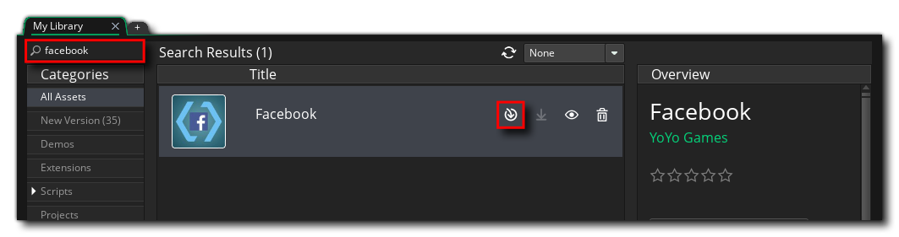

Setup
This guide covers everything you have to do outside your game's code before the Facebook extension will work: creating an app on Meta's developer dashboard, registering your Android and iOS builds against it, and installing and configuring the extension in GameMaker.
Once this is done, see Getting Started for the call order in GML, and Extension Options for what each of the extension's options is for.
Warning
This extension supports Android and iOS only. There is no HTML5, Windows, macOS or Linux implementation - on those targets every function returns a default value and nothing reaches Meta.
1. Create an app on the Meta dashboard
Everything starts with an app on Meta's developer dashboard, and with three values from it that GameMaker needs later: the App ID, the Display Name and the Client Token.
Meta documents its own dashboard, so this guide does not restate it. Meta App Dashboard is the map - it walks Meta's documentation in the order a GameMaker project needs it, and says exactly where each of the three values lives.
Warning
The App Secret on the Basic settings page is a server-side credential. It is not one of the three, this extension never asks for it, and it must never be shipped inside a game.
2. Add your platforms
Meta will not accept traffic from a build it does not recognise, so each platform you ship on has to be registered against the app.
The fields Meta asks for there are filled in with values that come out of GameMaker rather than out of Meta's documentation, so those are below.
iOS
Add the iOS platform and fill in your Bundle ID. It must match the bundle identifier in your game's iOS Game Options exactly - a mismatch is the single most common reason login silently fails on a device.
Android
Add the Android platform and fill in three fields:
| Field | Where it comes from |
|---|---|
| Package Name | The reverse-domain identifier from your game's Android Game Options. |
| Class Name | Your package name followed by .RunnerActivity, e.g. com.company.game.RunnerActivity. |
| Key Hash | The keystore hash, from the Keystore section of the Android Platform Preferences. |
The key hash is per keystore, not per app. A build signed with your debug keystore and a build signed with your release keystore produce different hashes, and Meta rejects a login from a hash it has not been given - so add both.
Save your changes on the dashboard before moving on.
3. Install the extension in GameMaker
Add the extension to your account on the Marketplace, then in GameMaker go to Marketplace -> My Library, find it with the search box, and download and install it into your project:

Make sure every one of the extension's files is added when you import it.
4. Fill in the extension options
Open the GMFacebook extension from the Asset Browser and fill in the three values you noted down in step 1 - App ID, Display Name and Client Token. All three are required, and fb_initialize fails if the App ID or the Client Token is left empty.
See Extension Options for the full list, and for the Android and iOS project settings the extension needs.
The extension writes everything else Meta requires - the Android manifest entries and string resources, the iOS plist keys and URL scheme, the Gradle dependency and the CocoaPods pods - on your behalf when the project is built. There is nothing to paste into the injection boxes by hand.
5. Build and test
Facebook logins cannot be tested in the IDE - the SDK is native, so you need a real Android or iOS build on a device or emulator.
- Before App Review, only people with a role on the app can log in, and only
public_profile,emailanduser_friendsare available. Everyone else sees a login failure. Meta App Dashboard covers roles, test users and App Review. - App Events are batched by the SDK, so a freshly sent event will not appear in the Events Manager straight away. Call fb_flush_events to push them immediately while testing.
- Anything beyond the three basic permissions has to go through App Review before it works for the public.